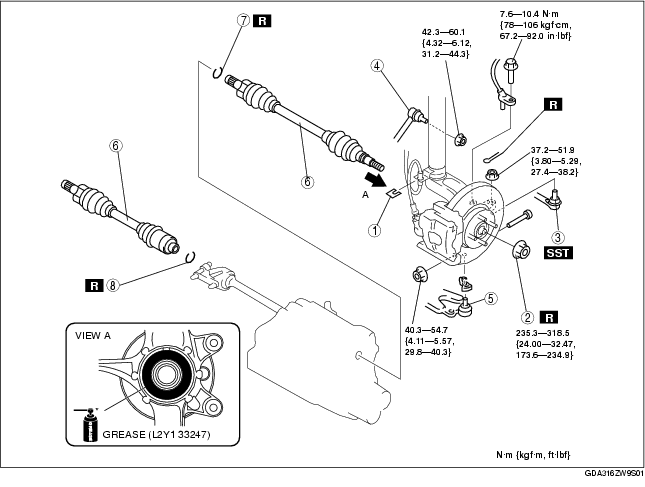
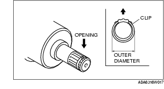
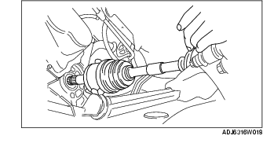
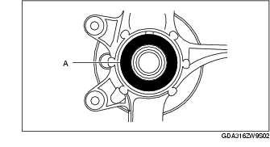

Drive shaft removal/installation
- • Performing the following procedures without first removing the ABS wheel-speed sensor may possibly cause an open circuit in the wiring harness if it is pulled by mistake. Before performing the following procedures, remove the ABS wheel-speed sensor (axle side) and fix it to an appropriate place where the sensor will not be pulled by mistake while servicing the vehicle.
1. Remove the ABS wheel-speed sensor. (See FRONT ABS WHEEL-SPEED SENSOR REMOVAL/INSTALLATION.)
2. Drain the transaxle oil. (See TRANSAXLE OIL REPLACEMENT [F35M-R].) (See AUTOMATIC TRANSAXLE FLUID (ATF) REPLACEMENT [FN4A-EL].)
3. Remove in the order indicated in the table.
4. Install in the reverse order of removal.

|
1
|
Clip
|
|
2
|
Locknut
|
|
3
|
Tie-rod end
(See Tie-rod End Removal Note)
|
|
4
|
Stabilizer control link (upper side)
|
|
5
|
Front lower arm ball joint
|
|
6
|
Drive shaft
(See Drive Shaft Removal Note)
|
|
7
|
Clip (drive shaft (LH))
|
|
8
|
Clip (joint shaft)
(See Clip Installation Note)
|
Drive Shaft Removal Note
1. Install a spare nut onto the drive shaft.
2. Tap the nut with copper hammer and separate the drive shaft from the wheel hub.

3. Remove the drive shaft from the wheel hub.
4. Separate the drive shaft (LH) from the transaxle by prying with a bar inserted between the outer ring and the transaxle.

5. Disconnect the drive shaft (RH) from the joint shaft by tapping the transaxle side outer ring lightly with a brass bar and hammer.

- • The sharp edges of the joint shaft can slice or puncture the oil seal. Be careful when removing the drive shaft from the transaxle.
6. Install the SST to the transaxle after the drive shaft is removed.

Clip (Drive Shaft (LH)) Installation Note
1. Install a new clip onto the drive shaft with the opening facing upward.
2. After installation, measure the outer diameter.

Outer diameter
Drive Shaft Installation Note
Drive shaft (LH)
- • The sharp edges of the drive shaft can slice or puncture the oil seal. Be careful when removing the drive shaft from the transaxle.
1. Apply grease (L2Y1 33247) to the wheel bearing inner race and drive shaft contact surface (Area A in figure).

2. Insert the drive shaft to the wheel hub.
3. Apply transaxle oil to the oil seal lip.
4. Install the drive shaft to the transaxle.

5. After installation, pull the transaxle side outer ring forward to confirm that the drive shaft is securely held by the clip.
Drive shaft (RH)
1. Apply grease (L2Y1 33247) to the wheel bearing inner race and drive shaft contact surface (Area A in figure).

2. Insert the drive shaft to the wheel hub.
3. Insert the drive shaft to the joint shaft.
4. After installation, pull the transaxle side outer ring forward to confirm that the drive shaft is securely held by the clip.